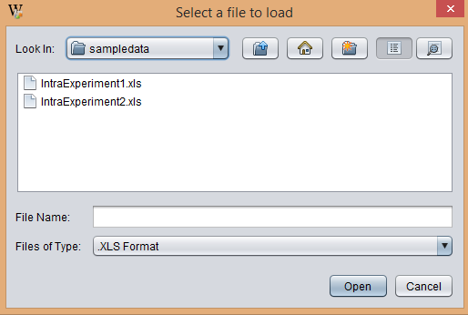
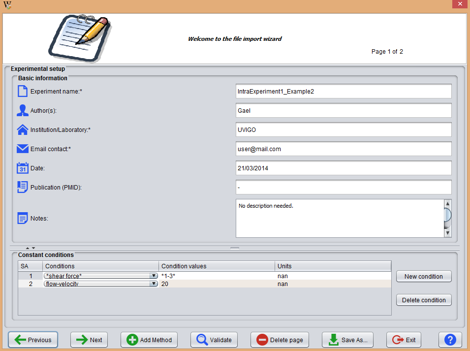
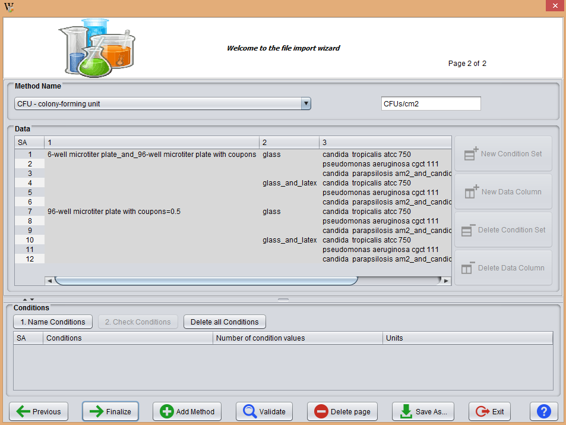
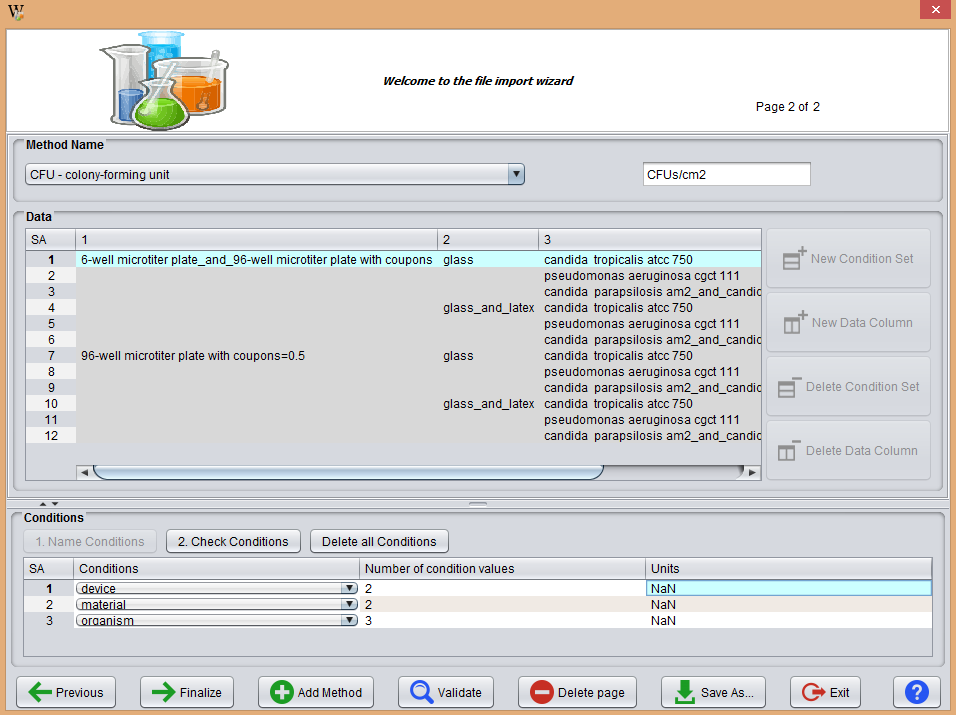
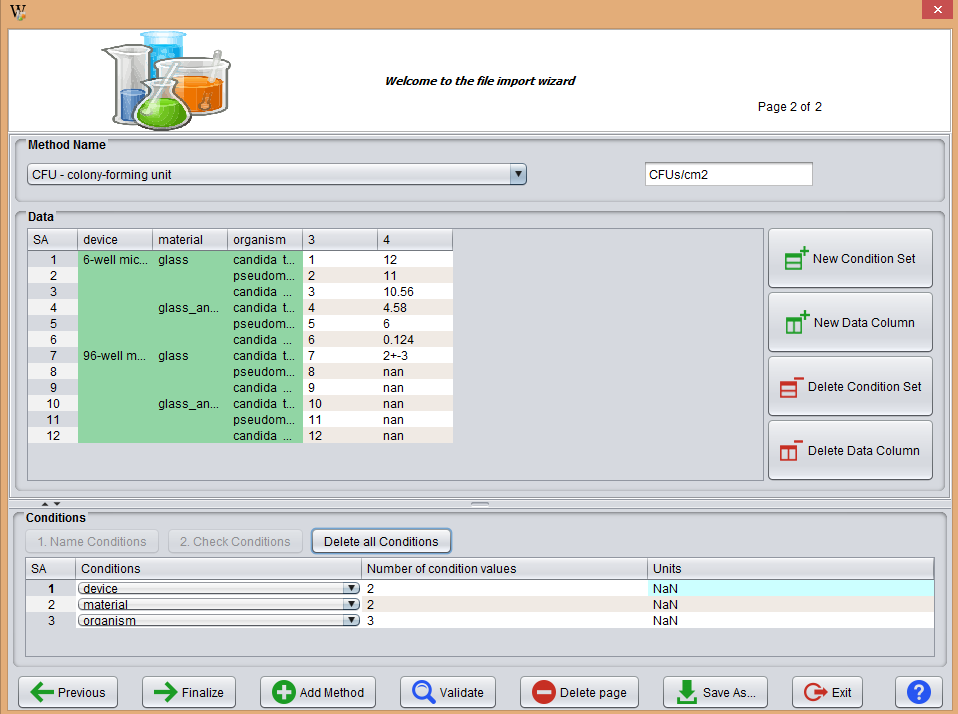
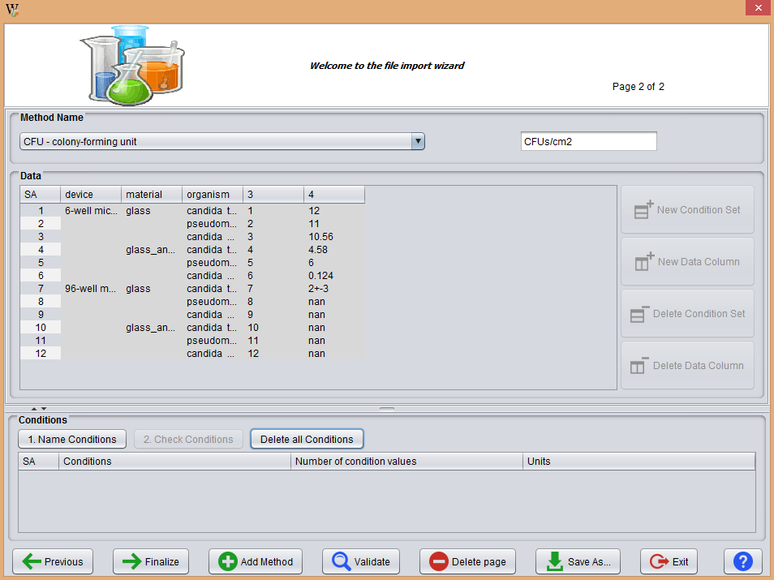

This operation allows the loading of an experiment saved in .xls format.

First, the user must specify the file to load by pressing the button "Import file" and select the location in the hard disk. Once selected, the user must proceed by pressing the Ok button.
When importing a .xls file, it is necessary to perform a series of steps (structuring and validation) to be able to load it with success in the program. These steps are explained below:
The first window shows the profile data of the selected experiment. If the .xls meets the structure required by the program, the form fields will be filled in with data, otherwise the user must cover them by hand.

Once this Setup page has no errors, the Next button may to be used to import data associated with the analysis methods.
The contents are similar to what the user can see when a method is edited (operation explained in section edit Method). If the file structure is correct, the data will be placed in the corresponding form fields and tables, as exemplified in the following image.

The data table requires additional curation. It is necessary to indicate which are the condition types and the condition values tested by the method. This step is only neccesary if the user doesn't import a xls file with the accepted structured by BEW (see XLS section). To do this, the user must select the cells containing the values of a given condition and press the button "1. Name conditions". The Conditions table (at the second half of the pane) will show as many rows as selected in the table above. The user must indicate the type, # of values and units of measure of each condition.

The button "2. Check Conditions" can be used to edit the data table, e.g. to modify the values of conditions.

The button "3. Delete all Conditions" deletes all the rows that are created in the Conditions table. This could be useful if the user selects invalid conditions in the Data table.

Once all these steps are performed, the Validate button should be used to verify that everything is correct. If there are no errors, the user may click in the Finalize button to finish importing the experiment or the Add Method to account for more analytical results.